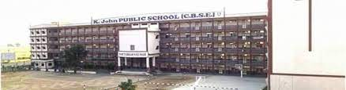

|
A school is an educational institution designed to provide learning spaces and learning environments for the teaching of students under the direction of teachers. Most countries have systems of formal education, which is sometimes compulsory.[2] In these systems, students progress through a series of schools. The names for these schools vary by country (discussed in the Regional terms section below) but generally include primary school for young children and secondary school for teenagers who have completed primary education. An institution where higher education is taught, is commonly called a university college or university. In addition to these core schools, students in a given country may also attend schools before and after primary (elementary in the U.S.) and secondary (middle school in the U.S.) education. Kindergarten or preschool provide some schooling to very young children (typically ages 3 5). University, vocational school, college or seminary may be available after secondary school. A school may be dedicated to one particular field, such as a school of economics or dance. Alternative schools may provide nontraditional curriculum and methods. Non-government schools, also known as private schools,[3] may be required when the government does not supply adequate or specific educational needs. Other private schools can also be religious, such as Christian schools, gurukula (Hindu schools), madrasa (Arabic schools), hawzas (Shi'i Muslim schools), yeshivas (Jewish schools), and others; or schools that have a higher standard of education or seek to foster other personal achievements. Schools for adults include institutions of corporate training, military education and training and business schools. Critics of school often accuse the school system of failing to adequately prepare students for their future lives,[4] of encouraging certain temperaments while inhibiting others,[5] of prescribing students exactly what to do, how, when, where and with whom, which would suppress creativity,[6] and of using extrinsic measures such as grades and homework, which would inhibit children's natural curiosity and desire to learn.[7] In homeschooling and distance education, teaching and learning take place independent from the institution of school or in a virtual school outside a traditional school building, respectively. Schools are organized in several different organizational models, including departmental, small learning communities, academies, integrated, and schools-within-a-schoolA school is an educational institution designed to provide learning spaces and learning environments for the teaching of students under the direction of teachers. Most countries have systems of formal education, which is sometimes compulsory.[2] In these systems, students progress through a series of schools. The names for these schools vary by country (discussed in the Regional terms section below) but generally include primary school for young children and secondary school for teenagers who have completed primary education. An institution where higher education is taught, is commonly called a university college or university. In addition to these core schools, students in a given country may also attend schools before and after primary (elementary in the U.S.) and secondary (middle school in the U.S.) education. Kindergarten or preschool provide some schooling to very young children (typically ages 3 5). University, vocational school, college or seminary may be available after secondary school. A school may be dedicated to one particular field, such as a school of economics or dance. Alternative schools may provide nontraditional curriculum and methods. Non-government schools, also known as private schools,[3] may be required when the government does not supply adequate or specific educational needs. Other private schools can also be religious, such as Christian schools, gurukula (Hindu schools), madrasa (Arabic schools), hawzas (Shi'i Muslim schools), yeshivas (Jewish schools), and others; or schools that have a higher standard of education or seek to foster other personal achievements. Schools for adults include institutions of corporate training, military education and training and business schools. Critics of school often accuse the school system of failing to adequately prepare students for their future lives,[4] of encouraging certain temperaments while inhibiting others,[5] of prescribing students exactly what to do, how, when, where and with whom, which would suppress creativity,[6] and of using extrinsic measures such as grades and homework, which would inhibit children's natural curiosity and desire to learn.[7] In homeschooling and distance education, teaching and learning take place independent from the institution of school or in a virtual school outside a traditional school building, respectively. Schools are organized in several different organizational models, including departmental, small learning communities, academies, integrated, and schools-within-a-school. |

facilities Teacher Informtion photo |